Code
library(tidyverse)
library(inspectdf)
library(bnlearn)
library(Rgraphviz)
library(reactable)
theme_set(theme_light())
bn_score <- bnlearn::score
options(scipen = 9999)For this tutorial, I wanted to create a more interesting and maybe more realistic use of a Bayesian Network (bayes net). That is why I am walking through how to use a bayes net in a machine learning application while also seeing what the likelihood of getting a loan approved would be based off some Kaggle data (data can be found here). First, I’ll load in the packages I’ll need and the data.
library(tidyverse)
library(inspectdf)
library(bnlearn)
library(Rgraphviz)
library(reactable)
theme_set(theme_light())
bn_score <- bnlearn::score
options(scipen = 9999)loan <- read_csv(
here::here(
"posts/2024-11-08-bayes-net-loan-approval",
"loan_data.csv"
)
)
# loan |> glimpse()For some exploratory data analysis, I wanted to look at variables with correlations that indicate multicollinearity so I could remove any variables that would add redundance to my bayes net model. The first was to see any variable that was correlated with the length of credit history in years (cb_person_cred_hist_length). Due to the high correlation between this variable and someone’s age (person_age) and years of employment experience (person_emp_exp), I decided to remove cb_person_cred_hist_length and person_emp_exp and only kept age.
loan |>
inspect_cor(
with = "cb_person_cred_hist_length"
)# A tibble: 8 × 7
col_1 col_2 corr p_value lower upper pcnt_nna
<chr> <chr> <dbl> <dbl> <dbl> <dbl> <dbl>
1 cb_person_cred_hist_length perso… 0.862 0 0.860 0.864 100
2 cb_person_cred_hist_length perso… 0.824 0 0.821 0.827 100
3 cb_person_cred_hist_length credi… 0.155 1.04e-237 0.146 0.164 100
4 cb_person_cred_hist_length perso… 0.124 2.99e-153 0.115 0.133 100
5 cb_person_cred_hist_length loan_… 0.0430 7.88e- 20 0.0337 0.0522 100
6 cb_person_cred_hist_length loan_… -0.0319 1.38e- 11 -0.0411 -0.0226 100
7 cb_person_cred_hist_length loan_… 0.0180 1.33e- 4 0.00877 0.0272 100
8 cb_person_cred_hist_length loan_… -0.0149 1.63e- 3 -0.0241 -0.00561 100loan |>
inspect_cor(
with = "person_age"
)# A tibble: 8 × 7
col_1 col_2 corr p_value lower upper pcnt_nna
<chr> <chr> <dbl> <dbl> <dbl> <dbl> <dbl>
1 person_age person_emp_exp 0.954 0 0.954 0.955 100
2 person_age cb_person_cred_hist_len… 0.862 0 0.860 0.864 100
3 person_age person_income 0.194 0 0.185 0.203 100
4 person_age credit_score 0.178 0 0.169 0.187 100
5 person_age loan_amnt 0.0507 5.02e-27 0.0415 0.0600 100
6 person_age loan_percent_income -0.0433 4.13e-20 -0.0525 -0.0341 100
7 person_age loan_status -0.0215 5.22e- 6 -0.0307 -0.0122 100
8 person_age loan_int_rate 0.0134 4.47e- 3 0.00416 0.0226 100I also decided to check on the loan amount to see if there were any variables correlated with the loan_amnt variable. While the loan amount as a percentage of annual income (loan_percent_income) had a high correlation, I decided to keep it in the bayes net model.
loan |>
inspect_cor(
with = "loan_amnt"
)# A tibble: 8 × 7
col_1 col_2 corr p_value lower upper pcnt_nna
<chr> <chr> <dbl> <dbl> <dbl> <dbl> <dbl>
1 loan_amnt loan_percent_income 0.593 0 5.87e-1 0.599 100
2 loan_amnt person_income 0.242 0 2.34e-1 0.251 100
3 loan_amnt loan_int_rate 0.146 7.35e-211 1.37e-1 0.155 100
4 loan_amnt loan_status 0.108 1.50e-115 9.86e-2 0.117 100
5 loan_amnt person_age 0.0507 5.02e- 27 4.15e-2 0.0600 100
6 loan_amnt person_emp_exp 0.0446 3.12e- 21 3.54e-2 0.0538 100
7 loan_amnt cb_person_cred_hist_leng… 0.0430 7.88e- 20 3.37e-2 0.0522 100
8 loan_amnt credit_score 0.00907 5.42e- 2 -1.65e-4 0.0183 100The last thing I did before going into building the model was recoding all of my variables to be categorical. I wanted to conduct a discrete bayes net rather than create a mixed data model so the coding below is how I changed all of my variables. I am only showing the final recoding of my variables because some of the variables were recoded to have decent proportions within each level. The proportion of cases for “Other” was extremely low at 0.0026 so I decided to drop the “Other” level.
loan_cat <- loan |>
mutate(
credit_score_brack = case_when(
credit_score > 800 ~ "excellent",
credit_score < 800 & credit_score >= 740 ~ "very_good",
credit_score < 740 & credit_score >= 670 ~ "good",
credit_score < 670 & credit_score >= 580 ~ "fair",
credit_score < 580 ~ "poor"
),
cred_hist_length_brack = case_when(
cb_person_cred_hist_length >= 18 ~ "18+",
TRUE ~ as.character(cb_person_cred_hist_length)
),
loan_percent_income_brack = case_when(
loan_percent_income >= .3 ~ ".3+",
loan_percent_income < .3 & loan_percent_income >= .2 ~ ".2 - .29",
loan_percent_income < .2 & loan_percent_income >= .1 ~ ".1 - .19",
loan_percent_income < .1 ~ "0-.09"
),
loan_int_rate_brack = case_when(
loan_int_rate < 10 ~ "<10",
loan_int_rate >= 10 & loan_int_rate <= 15 ~ "10 - 15",
loan_int_rate > 15 ~ "15+"
),
loan_amnt_brack = case_when(
loan_amnt < 5000 ~ "<5k",
loan_amnt >= 5000 & loan_amnt <= 9999 ~ "5k - 9.99k",
loan_amnt >= 10000 & loan_amnt <= 15000 ~ "10k - 14.99k",
loan_amnt >= 15000 & loan_amnt <= 20000 ~ "15k - 19.99k",
loan_amnt >= 20000 ~ "20k+"
),
# person_emp_exp_brack = case_when(
# person_emp_exp > 50 ~ NA_character_,
# person_emp_exp >= 20 & person_emp_exp <= 50 ~ "20 - 50 years",
# person_emp_exp >= 10 & person_emp_exp < 20 ~ "10 - 19 years",
# person_emp_exp >= 5 & person_emp_exp < 10 ~ "5 - 9 years",
# person_emp_exp < 5 ~ "<5 years"
# ),
person_income_brack = case_when(
person_income < 30000 ~ "<30k",
person_income >= 30000 & person_income < 50000 ~ "30k - 49,999",
person_income >= 50000 & person_income < 70000 ~ "50k - 69,999",
person_income >= 70000 & person_income < 90000 ~ "70k - 89,999",
person_income >= 90000 ~ "90k"
),
person_age_brack = case_when(
person_age < 30 ~ "<30",
person_age >= 30 & person_age < 40 ~ "30-39",
person_age >= 40 ~ "40+"
)
) |>
drop_na(
person_age_brack
) |>
filter(
person_home_ownership != "OTHER"
) |>
select(
matches(
"_brack$"
),
person_gender,
person_education,
person_home_ownership,
loan_intent,
previous_loan_defaults_on_file,
loan_status
)Here is the code I kept checking to double check the recoding of variables.
map(
loan_cat,
~round(prop.table(table(.x)), 2)
)Because, I’m a visual learner I also decided to include these visualizations to show the counts for each level for each variable.
map2(
loan_cat,
loan_cat |> colnames(),
~loan_cat |>
ggplot(
aes(
.x
)
) +
geom_bar(
color = "black",
fill = "dodgerblue"
) +
labs(
title = glue::glue("{.y}")
)
)$credit_score_brack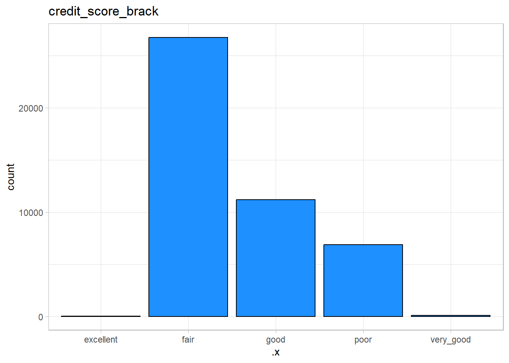
$cred_hist_length_brack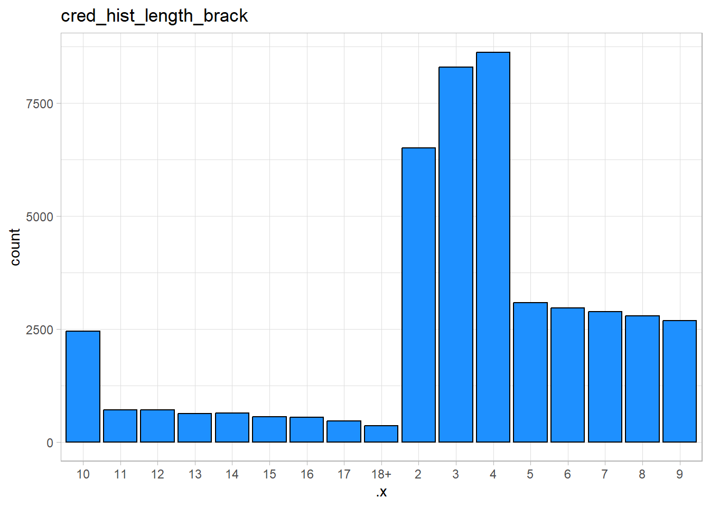
$loan_percent_income_brack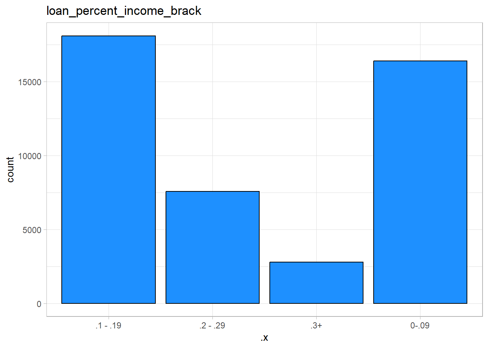
$loan_int_rate_brack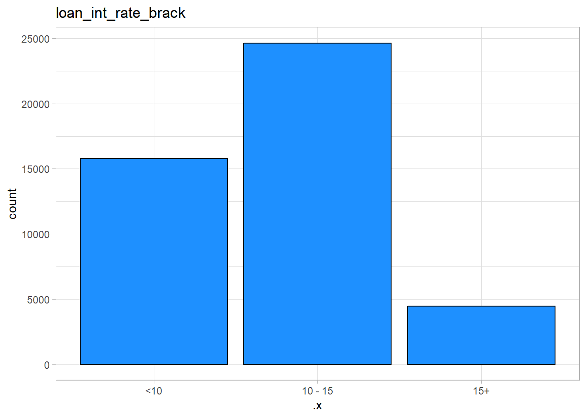
$loan_amnt_brack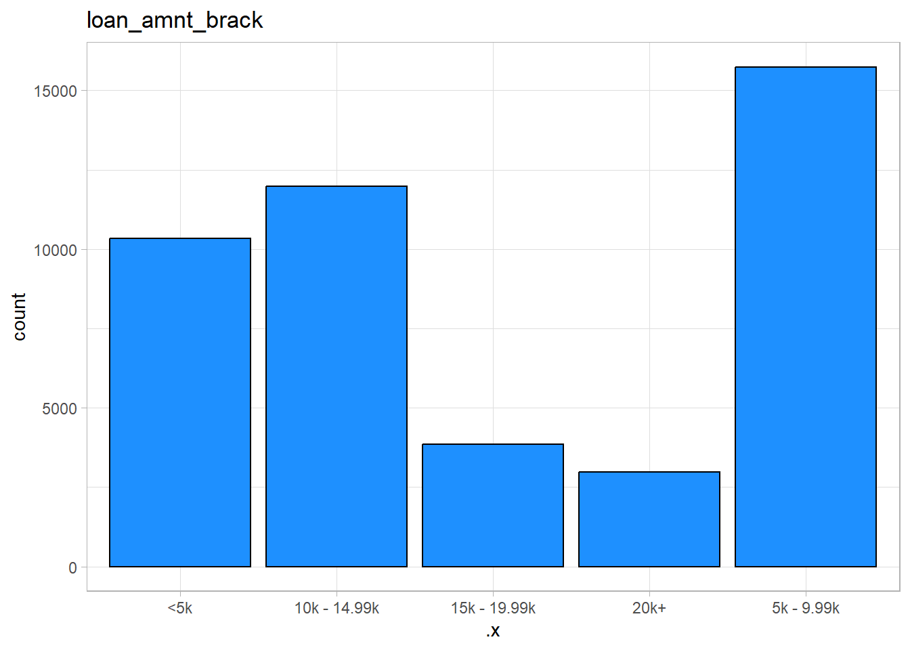
$person_income_brack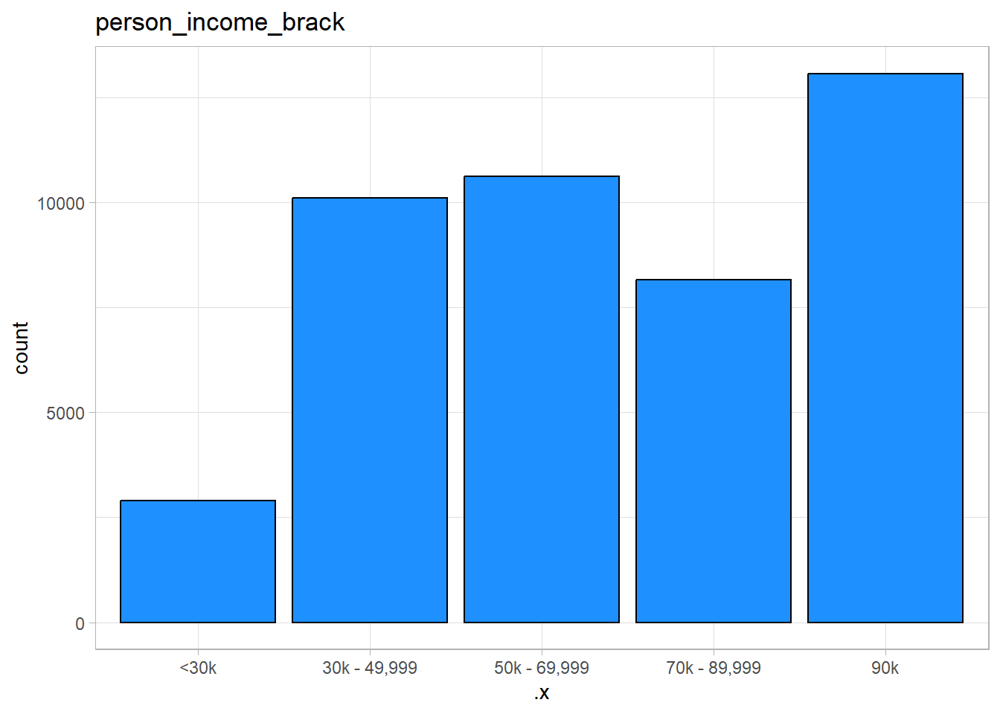
$person_age_brack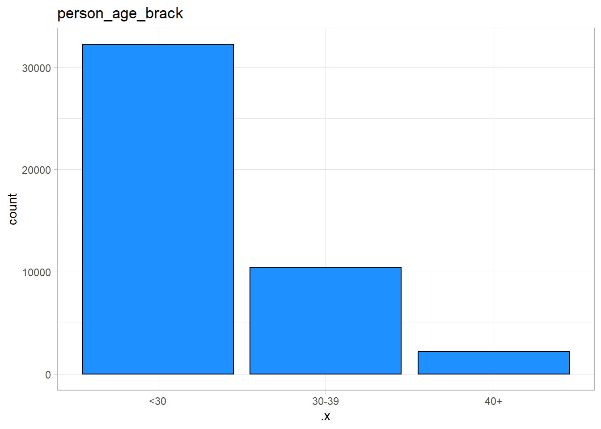
$person_gender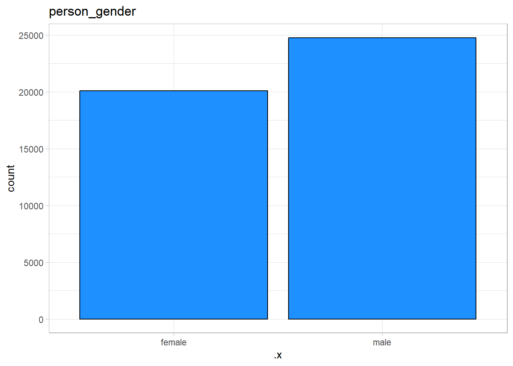
$person_education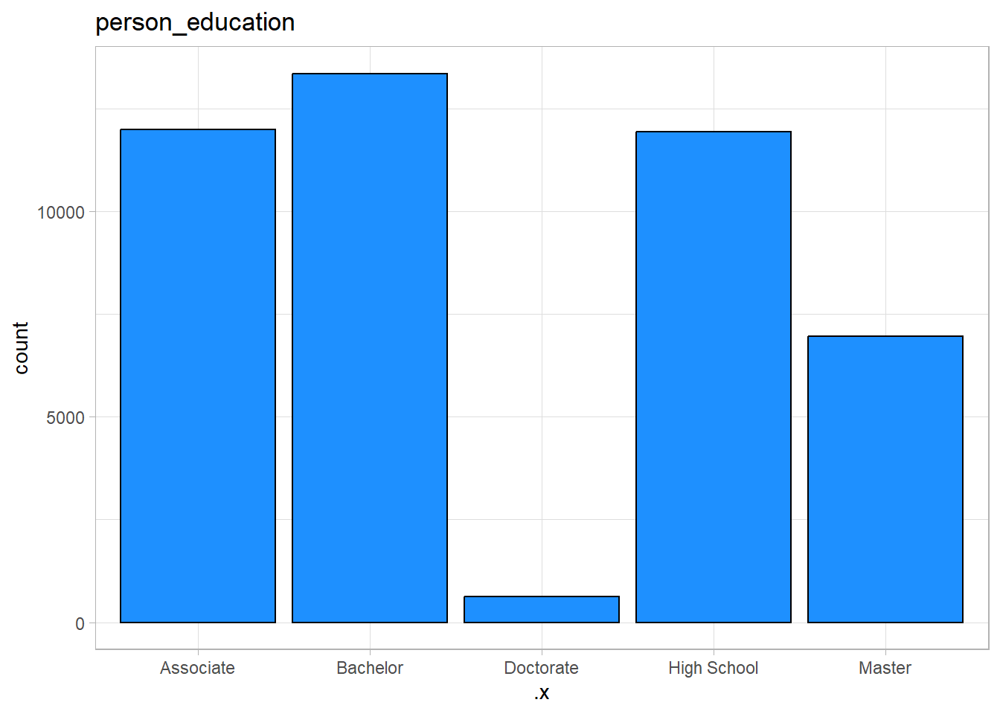
$person_home_ownership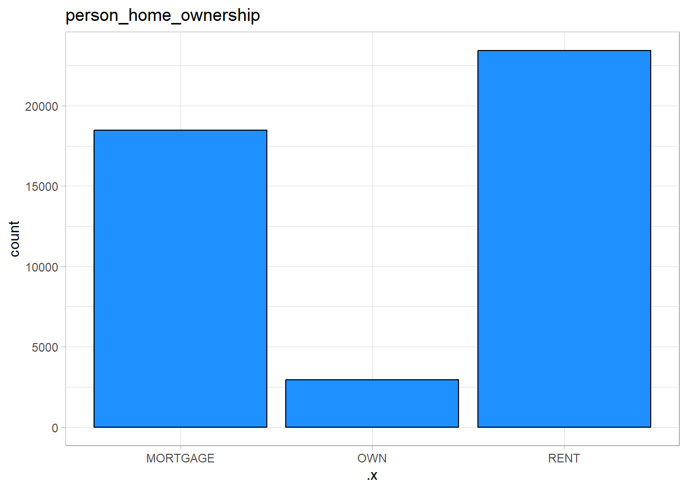
$loan_intent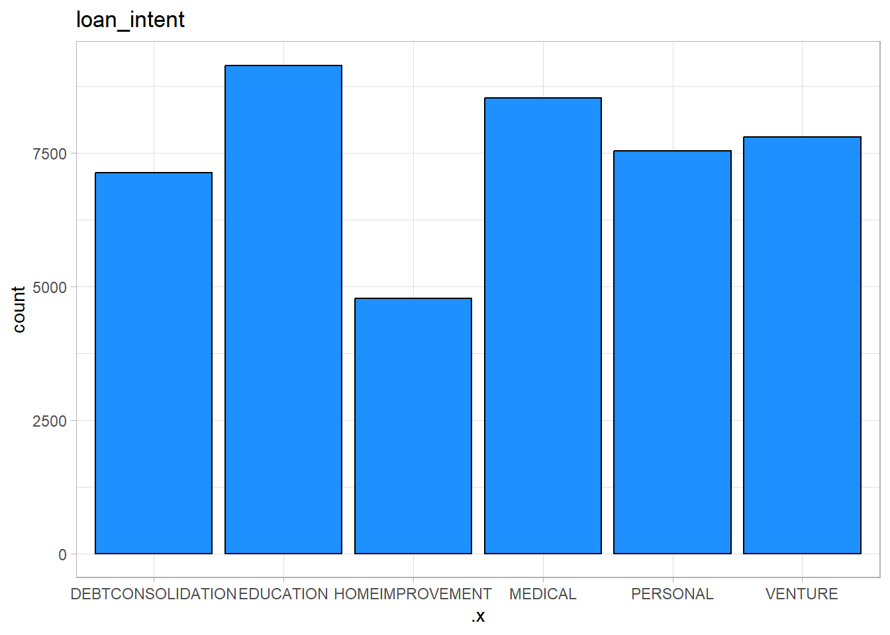
$previous_loan_defaults_on_file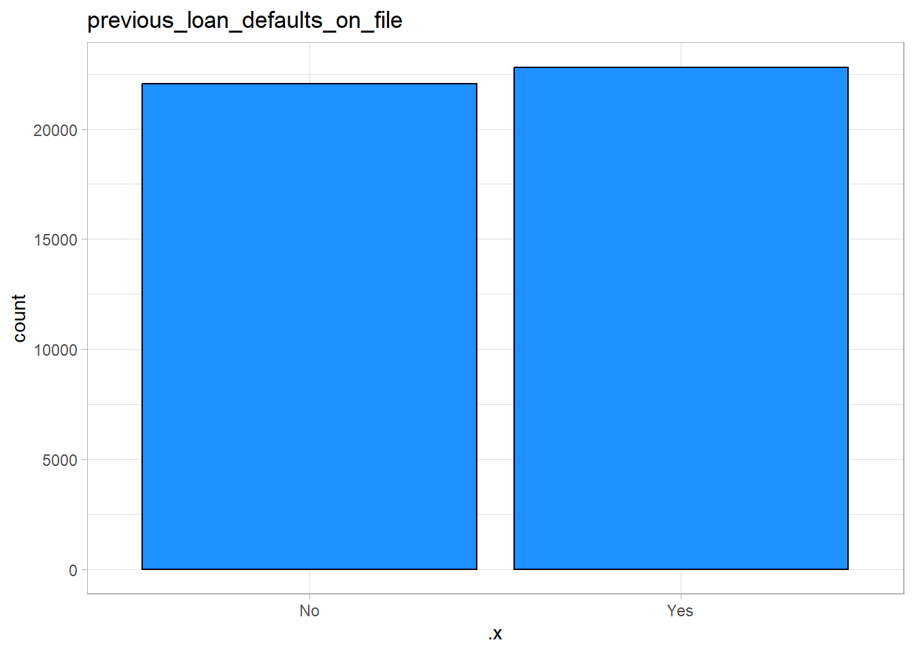
$loan_status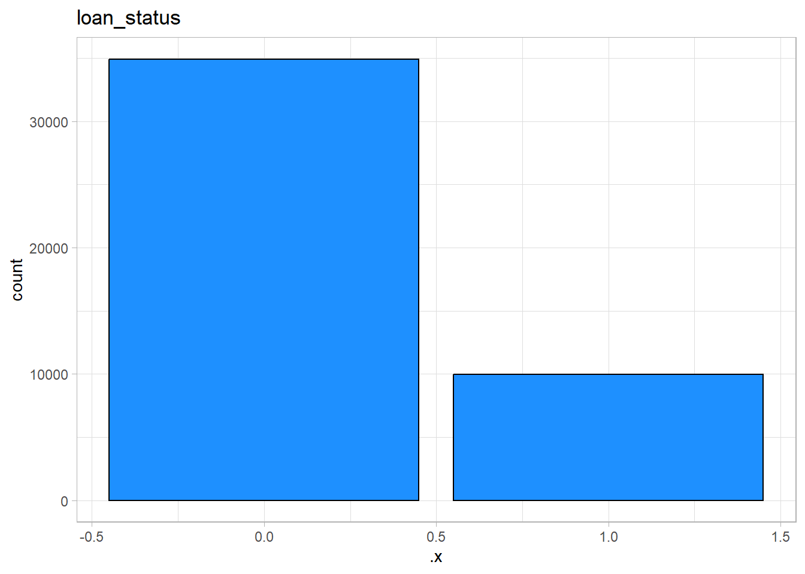
To be able to create a discrete bayes net using the bnlearn package, every variable needs to be changed to a factor type and bnlearn does not like tibbles so I had to change the data back to a data frame.
loan_fact <- loan_cat |>
mutate(
across(
everything(),
~as.factor(.x)
)
)
loan_fact <- as.data.frame(loan_fact)Let’s start with separating our data into the training and testing sets.
set.seed(12345)
loan_train <- loan_fact |>
slice_sample(
prop = .75
)
loan_test <- anti_join(
loan_fact,
loan_train
)For my training and testing sets I also decided to rearrange my factors just to reorganize for any visualizations later.
loan_train <- loan_train |>
select(
-cred_hist_length_brack
) |>
mutate(
person_education = fct_relevel(
person_education,
"High School",
"Associate",
"Bachelor",
"Master",
"Doctorate"
),
person_income_brack = fct_relevel(
person_income_brack,
"<30k",
"30k - 49,999",
"50k - 69,999",
"70k - 89,999",
"90k"
),
# person_emp_exp_brack = fct_relevel(
# person_emp_exp_brack,
# "<5 years",
# "5 - 9 years",
# "10 - 19 years",
# "20 - 50 years"
# ),
loan_amnt_brack = fct_relevel(
loan_amnt_brack,
"<5k",
"5k - 9.99k",
"10k - 14.99k",
"15k - 19.99k",
"20k+"
),
loan_percent_income_brack = fct_relevel(
loan_percent_income_brack,
"0-.09",
".1 - .19",
".2 - .29",
".3+"
),
credit_score_brack = fct_relevel(
credit_score_brack,
"poor",
"fair",
"good",
"very_good"
)
)
loan_test <- loan_test |>
select(
-cred_hist_length_brack
) |>
mutate(
person_education = fct_relevel(
person_education,
"High School",
"Associate",
"Bachelor",
"Master",
"Doctorate"
),
person_income_brack = fct_relevel(
person_income_brack,
"<30k",
"30k - 49,999",
"50k - 69,999",
"70k - 89,999",
"90k"
),
# person_emp_exp_brack = fct_relevel(
# person_emp_exp_brack,
# "<5 years",
# "5 - 9 years",
# "10 - 19 years",
# "20 - 50 years"
# ),
loan_amnt_brack = fct_relevel(
loan_amnt_brack,
"<5k",
"5k - 9.99k",
"10k - 14.99k",
"15k - 19.99k",
"20k+"
),
loan_percent_income_brack = fct_relevel(
loan_percent_income_brack,
"0-.09",
".1 - .19",
".2 - .29",
".3+"
),
credit_score_brack = fct_relevel(
credit_score_brack,
"poor",
"fair",
"good",
"very_good"
)
)I’m going to start all of my directed acyclic graphs from an empty DAG. The names for the other DAGs will make sense once we get to each structure learning alogirthms.
dag <- empty.graph(colnames(loan_train))
hc_dag <- dag
jp_dag <- dag
mmhc_dag <- dag
iamb_dag <- dagWhile I’m not going to go into a lot of detail about it, structure learning is the process of learning the structure of the DAG from the data. For this example, I’ll be using different algorithms for structure learning to see which algorithm has the best network score, including the log likelihood and the Bayesian Dirichlet Equivalent (BDE) score. There are two arguments for each of the learning algorithms, a blacklist and a whitelist, which are edges (relationships) between nodes (variables) that we either don’t want the algorithm to make or want to make sure are included in the model respectively. Bnlearn has links to articles of interest for all of the structure learning algorithms here if interested about how the algorithms work.
I only included a blacklist and made sure that there were no edges from the outcome of interest (loan_status) as well as no edges that end at the demographic nodes of gender, age, and education.
bl <- matrix(
c(
"loan_status", "person_gender",
"loan_status", "person_age_brack",
"loan_status", "credit_score_brack",
"loan_status", "person_education",
"loan_status", "previous_loan_defaults_on_file",
"loan_status", "loan_percent_income_brack",
"loan_status", "person_income_brack",
"loan_status", "loan_amnt_brack",
"loan_status", "person_home_ownership",
"loan_status", "loan_int_rate_brack",
"loan_status", "loan_intent",
"person_age_brack", "person_gender",
"credit_score_brack", "person_gender",
"person_education", "person_gender",
"previous_loan_defaults_on_file", "person_gender",
"loan_percent_income_brack", "person_gender",
"person_income_brack", "person_gender",
"loan_amnt_brack", "person_gender",
"person_home_ownership", "person_gender",
"loan_int_rate_brack", "person_gender",
"loan_intent", "person_gender",
"person_gender", "person_age_brack",
"credit_score_brack", "person_age_brack",
"person_education", "person_age_brack",
"previous_loan_defaults_on_file", "person_age_brack",
"loan_percent_income_brack", "person_age_brack",
"person_income_brack", "person_age_brack",
"loan_amnt_brack", "person_age_brack",
"person_home_ownership", "person_age_brack",
"loan_int_rate_brack", "person_age_brack",
"loan_intent", "person_age_brack",
"person_age_brack", "person_education",
"person_gender", "person_education",
"credit_score_brack", "person_education",
"previous_loan_defaults_on_file", "person_education",
"loan_percent_income_brack", "person_education",
"person_income_brack", "person_education",
"loan_amnt_brack", "person_education",
"person_home_ownership", "person_education",
"loan_int_rate_brack", "person_education",
"loan_intent", "person_education"
),
ncol = 2,
byrow = TRUE,
dimnames = list(
NULL,
c("from", "to")
)
)set.seed(12345)
hc_bn <- hc(
loan_train,
blacklist = bl
)
graphviz.plot(hc_bn)
set.seed(12345)
mmhc_bn <- mmhc(
loan_train,
blacklist = bl
)
graphviz.plot(mmhc_bn)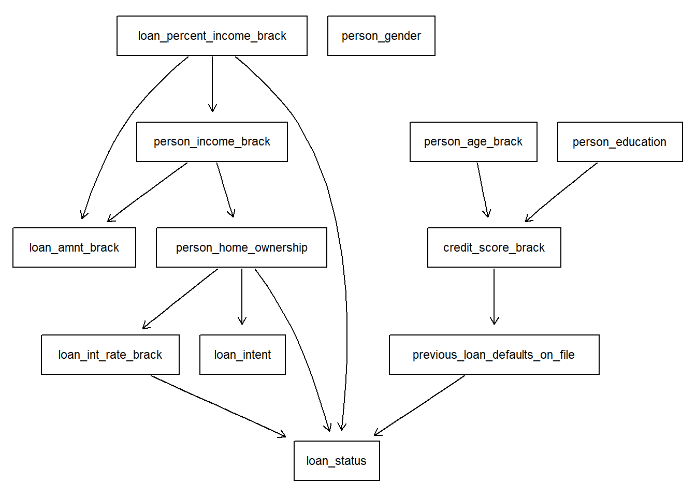
set.seed(12345)
iamb_bn <- iamb(
loan_train,
blacklist = bl
)
graphviz.plot(iamb_bn)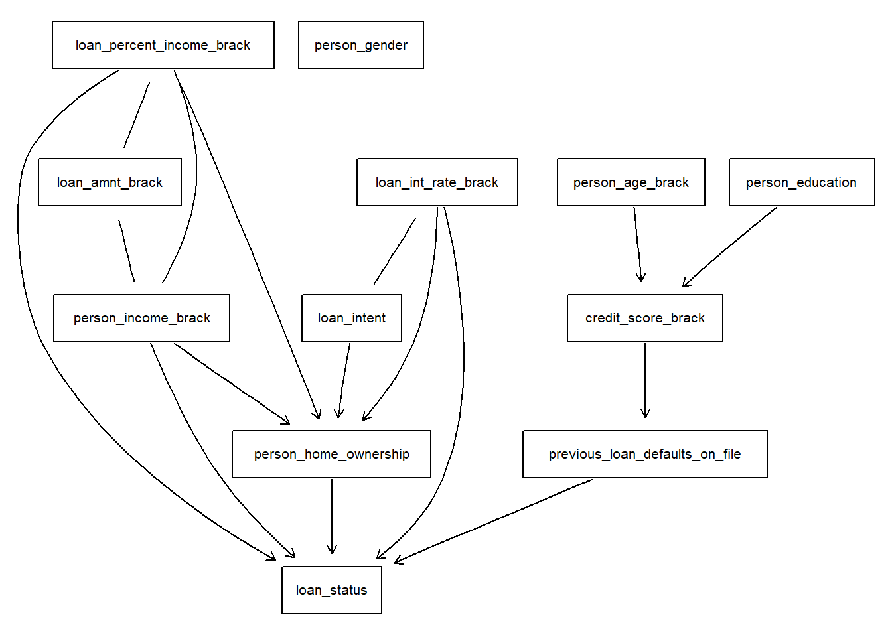
From the DAGs, apparently gender is not that important of a node in our model. We can also see that when using the Incremental Association (IAMB) algorithm that some of the edges between nodes are not directional. We will have to do some extra work by setting the arcs between the non-directional edges a certain way. This takes some domain knowledge to see what makes the most sense. This is where creating a bayes net becomes more art than science. Below are the decisions that were made to complete the DAG.
The DAG needs to be fully directional so that network scores can be computed.
arcs(iamb_dag) <- arcs(iamb_bn)
iamb_dag <- set.arc(iamb_dag, from = "loan_int_rate_brack", to = "loan_intent")
iamb_dag <- set.arc(iamb_dag, from = "loan_percent_income_brack", to = "loan_amnt_brack")
iamb_dag <- set.arc(iamb_dag, from = "loan_percent_income_brack", to = "person_income_brack")
iamb_dag <- set.arc(iamb_dag, from = "loan_amnt_brack", to = "person_income_brack")
graphviz.plot(iamb_dag)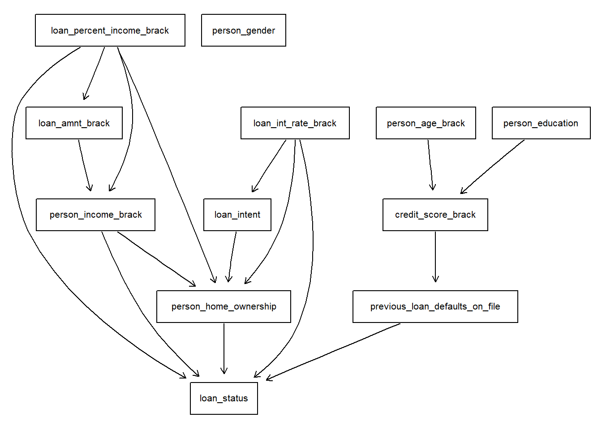
arcs(hc_dag) <- hc_bn$arcs
arcs(mmhc_dag) <- mmhc_bn$arcsThe final DAG I created was something that I thought of without any structural learning. This uses demographic variables as the starting nodes and then setting arcs that made sense to me. This defined DAG will also be compared to the learned DAGs to see what model has the lowest log likelihood and BDE.
arcs <- matrix(
c(
"person_gender", "person_income_brack",
"person_gender", "person_home_ownership",
"person_gender", "previous_loan_defaults_on_file",
"person_age_brack", "person_income_brack",
"person_age_brack", "person_home_ownership",
"person_age_brack", "previous_loan_defaults_on_file",
"person_education", "person_income_brack",
"person_education", "person_home_ownership",
"person_education", "previous_loan_defaults_on_file",
"person_income_brack", "credit_score_brack",
"person_home_ownership", "credit_score_brack",
"previous_loan_defaults_on_file", "credit_score_brack",
"person_income_brack", "loan_percent_income_brack",
"person_home_ownership", "loan_percent_income_brack",
"person_gender", "loan_int_rate_brack",
"person_education", "loan_int_rate_brack",
"person_age_brack", "loan_int_rate_brack",
"person_income_brack", "loan_int_rate_brack",
"person_home_ownership", "loan_int_rate_brack",
"previous_loan_defaults_on_file", "loan_int_rate_brack",
"person_income_brack", "loan_amnt_brack",
"person_home_ownership", "loan_amnt_brack",
"loan_percent_income_brack", "loan_intent",
"loan_int_rate_brack", "loan_intent",
"loan_amnt_brack", "loan_intent",
"credit_score_brack", "loan_intent",
"loan_int_rate_brack", "loan_status",
"credit_score_brack", "loan_status",
"loan_percent_income_brack", "loan_status",
"loan_amnt_brack", "loan_status",
"previous_loan_defaults_on_file", "loan_status",
"loan_intent", "loan_status"
),
byrow = TRUE,
ncol = 2,
dimnames = list(NULL, c("from", "to"))
)
arcs(jp_dag) <- arcs
graphviz.plot(jp_dag)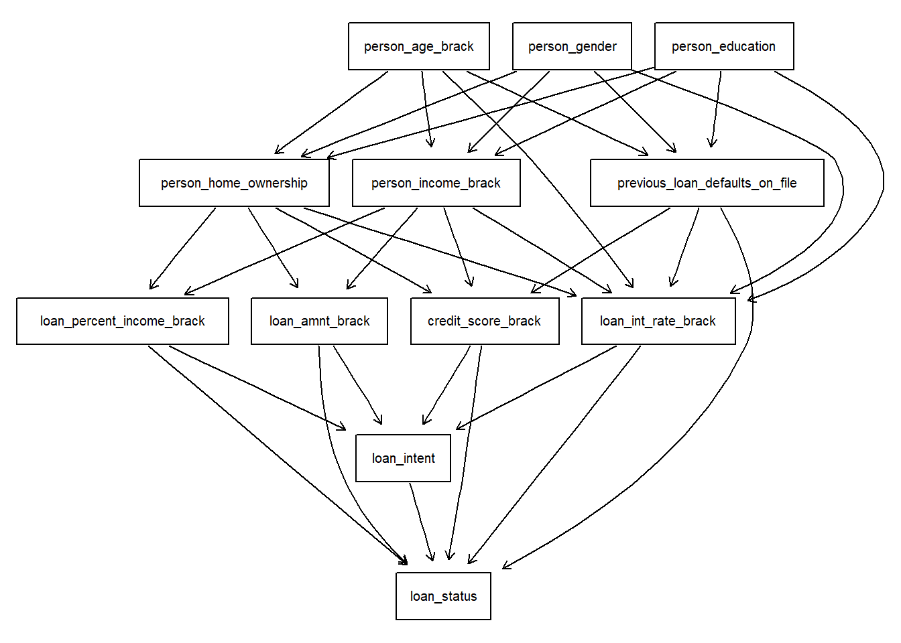
map(
list(
dag,
jp_dag,
hc_dag,
mmhc_dag,
iamb_dag
),
~bn_score(.x, loan_train, type = "loglik")
)[[1]]
[1] -429780
[[2]]
[1] -410700.2
[[3]]
[1] -386319.3
[[4]]
[1] -389004.6
[[5]]
[1] -387806map(
list(
dag,
jp_dag,
hc_dag,
mmhc_dag,
iamb_dag
),
~bn_score(.x, loan_train, type = "aic")
)[[1]]
[1] -429813
[[2]]
[1] -418042.2
[[3]]
[1] -386717.3
[[4]]
[1] -389278.6
[[5]]
[1] -389074map(
list(
dag,
jp_dag,
hc_dag,
mmhc_dag,
iamb_dag
),
~bn_score(.x, loan_train, type = "bic")
)[[1]]
[1] -429952
[[2]]
[1] -448967.2
[[3]]
[1] -388393.7
[[4]]
[1] -390432.7
[[5]]
[1] -394414.8map(
list(
dag,
jp_dag,
hc_dag,
mmhc_dag,
iamb_dag
),
~bn_score(.x, loan_train, type = "bde", iss = 5)
)[[1]]
[1] -429941
[[2]]
[1] -430616.4
[[3]]
[1] -387687.8
[[4]]
[1] -389857.5
[[5]]
[1] -393009.6After calculating all of the scores, it seems like the DAG created from the Hill Climb algorithm is the best fitting model, so I am going to fit that DAG for the model.
set.seed(12345)
hc_fit <- bn.fit(hc_dag, data = loan_train, method = "bayes", iss = 5)While this model used the training data, I’m still interested in looking at the likelihood of being accepted for a loan and the probabilities of getting a a low interest rate based on the loan amount, home ownership, and if the person has defaulted on a previous loan.
I printed out the DAG again to make it easier to see what nodes I am particularly interested in. I also included the str() function to see the breakdown of the table of probabilities when using bnlearn.
Looking at the output, the table is broken down into the first index showing the levels of loan status (1 = “0”/“Decline”, 2 = “1”/“Accepted”), the second index showing the levels of the loan amount as a percentage of annual income variable, and so on following the values of the list. For the conditional probabilities printed for the model (hc_fit$loan_status$prob[2, 1:4, 1:3, 1:3, 1:2]), I am only interested in looking at the combinations of each parent node for those that are accepted for a loan.
It seems that not having a previous default on file leads to a higher probability of being accepted for a loan, which makes sense.
graphviz.plot(hc_dag)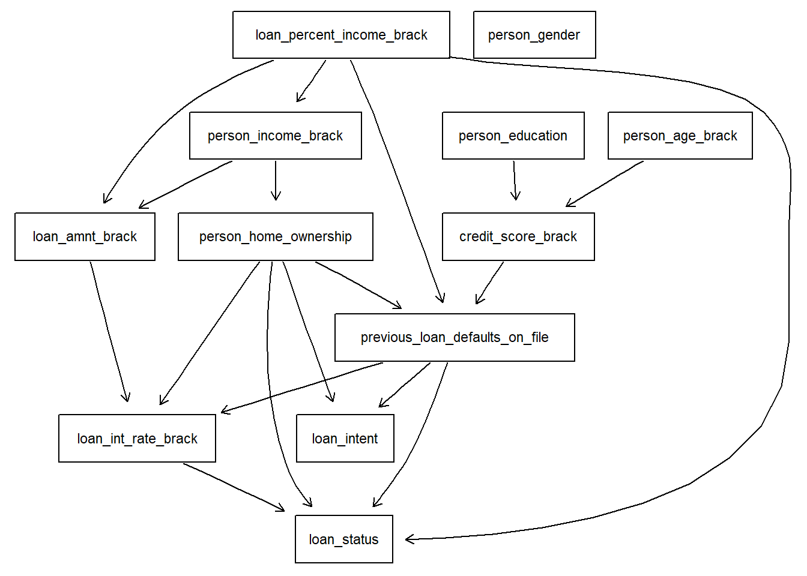
hc_fit$loan_status$prob |> str() 'table' num [1:2, 1:4, 1:3, 1:3, 1:2] 0.908 0.092 0.888 0.112 0.858 ...
- attr(*, "dimnames")=List of 5
..$ loan_status : chr [1:2] "0" "1"
..$ loan_percent_income_brack : chr [1:4] "0-.09" ".1 - .19" ".2 - .29" ".3+"
..$ loan_int_rate_brack : chr [1:3] "<10" "10 - 15" "15+"
..$ person_home_ownership : chr [1:3] "MORTGAGE" "OWN" "RENT"
..$ previous_loan_defaults_on_file: chr [1:2] "No" "Yes"# loan status - yes
hc_fit$loan_status$prob[2, 1:4, 1:3, 1:3, 1:2], , person_home_ownership = MORTGAGE, previous_loan_defaults_on_file = No
loan_int_rate_brack
loan_percent_income_brack <10 10 - 15 15+
0-.09 0.09204538045 0.23441689989 0.68234908528
.1 - .19 0.11181890282 0.27953722168 0.69203251344
.2 - .29 0.14229782194 0.35013823128 0.82235274788
.3+ 0.25833519803 0.50364778600 0.79207013871
, , person_home_ownership = OWN, previous_loan_defaults_on_file = No
loan_int_rate_brack
loan_percent_income_brack <10 10 - 15 15+
0-.09 0.00036142836 0.00025706941 0.37554019015
.1 - .19 0.13415540959 0.17275431782 0.31612550164
.2 - .29 0.29006635834 0.28331900258 0.40937696665
.3+ 0.43912749408 0.31612550164 0.62445980985
, , person_home_ownership = RENT, previous_loan_defaults_on_file = No
loan_int_rate_brack
loan_percent_income_brack <10 10 - 15 15+
0-.09 0.14568259065 0.34125578284 0.85128541940
.1 - .19 0.20362270164 0.39789409908 0.85317350774
.2 - .29 0.70486047665 0.77799227799 0.93997469113
.3+ 0.99989151660 0.99995745188 0.99980609633
, , person_home_ownership = MORTGAGE, previous_loan_defaults_on_file = Yes
loan_int_rate_brack
loan_percent_income_brack <10 10 - 15 15+
0-.09 0.00001960523 0.00002052057 0.00025148375
.1 - .19 0.00002556734 0.00002182320 0.00023934897
.2 - .29 0.00010091632 0.00006323831 0.00044476072
.3+ 0.00037713079 0.00020416497 0.00246791708
, , person_home_ownership = OWN, previous_loan_defaults_on_file = Yes
loan_int_rate_brack
loan_percent_income_brack <10 10 - 15 15+
0-.09 0.00018761726 0.00015706477 0.00099009901
.1 - .19 0.00018561140 0.00012266326 0.00072233459
.2 - .29 0.00032129546 0.00022984279 0.00133191263
.3+ 0.00070761393 0.00057803468 0.00491159136
, , person_home_ownership = RENT, previous_loan_defaults_on_file = Yes
loan_int_rate_brack
loan_percent_income_brack <10 10 - 15 15+
0-.09 0.00003029679 0.00001976144 0.00025706941
.1 - .19 0.00002644355 0.00001597107 0.00019282684
.2 - .29 0.00010616162 0.00005181884 0.00075369310
.3+ 0.50000000000 0.50000000000 0.50000000000Another node I was interested in was the interest rate levels. Below I show the probability of each interest rate level. Interesting that the probability of getting an interest rate between 10% and 15% seemed similar if the person has or has not defaulted on a previous loan.
# loan interest rates
# < 10 percent interest rate
hc_fit$loan_int_rate_brack$prob[1, 1:5, 1:3, 1:2], , previous_loan_defaults_on_file = No
person_home_ownership
loan_amnt_brack MORTGAGE OWN RENT
<5k 0.4319922 0.3372990 0.2485702
5k - 9.99k 0.4289390 0.4413874 0.2817689
10k - 14.99k 0.3818242 0.3749606 0.2521690
15k - 19.99k 0.2261606 0.2045198 0.1497653
20k+ 0.1632122 0.1856410 0.1316751
, , previous_loan_defaults_on_file = Yes
person_home_ownership
loan_amnt_brack MORTGAGE OWN RENT
<5k 0.4996333 0.4057123 0.3626205
5k - 9.99k 0.5184934 0.4311780 0.4009119
10k - 14.99k 0.4553838 0.3736940 0.3217806
15k - 19.99k 0.3118322 0.3258567 0.2633289
20k+ 0.2222483 0.2171009 0.1872255# 10-15 percent interest rate
hc_fit$loan_int_rate_brack$prob[2, 1:5, 1:3, 1:2], , previous_loan_defaults_on_file = No
person_home_ownership
loan_amnt_brack MORTGAGE OWN RENT
<5k 0.4828632 0.5792025 0.6103174
5k - 9.99k 0.4720931 0.4653994 0.5596162
10k - 14.99k 0.4904833 0.5168716 0.5987237
15k - 19.99k 0.6113127 0.6723164 0.6480722
20k+ 0.5282189 0.5364103 0.5793884
, , previous_loan_defaults_on_file = Yes
person_home_ownership
loan_amnt_brack MORTGAGE OWN RENT
<5k 0.4669755 0.5270534 0.5972150
5k - 9.99k 0.4503999 0.4948113 0.5578687
10k - 14.99k 0.5006534 0.5205381 0.6228410
15k - 19.99k 0.6224036 0.6062305 0.6886723
20k+ 0.6525271 0.6379426 0.6686627# 15+ percent interest rate
hc_fit$loan_int_rate_brack$prob[3, 1:5, 1:3, 1:2], , previous_loan_defaults_on_file = No
person_home_ownership
loan_amnt_brack MORTGAGE OWN RENT
<5k 0.08514465 0.08349857 0.14111240
5k - 9.99k 0.09896793 0.09321327 0.15861494
10k - 14.99k 0.12769256 0.10816777 0.14910728
15k - 19.99k 0.16252675 0.12316384 0.20216242
20k+ 0.30856886 0.27794872 0.28893644
, , previous_loan_defaults_on_file = Yes
person_home_ownership
loan_amnt_brack MORTGAGE OWN RENT
<5k 0.03339124 0.06723434 0.04016452
5k - 9.99k 0.03110673 0.07401072 0.04121932
10k - 14.99k 0.04396282 0.10576785 0.05537834
15k - 19.99k 0.06576415 0.06791277 0.04799882
20k+ 0.12522459 0.14495658 0.14411178I also wanted to include the code for cross validation. You can either conduct cross validation with the data and start with a structure learning algorithm or you can include the DAG that was created and then make predictions. Here, since I am using the DAG I created with the training dataset, it will separate the data into a training and validation datasets. I am going to focus on the reduction of the classification error. I am also going to use the parent nodes to predict whether people get approved for loans and have 10 folds. I also checked to see the confusion matrix and see the proportions of true and false positives and true and false negatives. Overall, it seems like the model is doing okay with false positives and false negatives.
# set.seed(12345)
# hc_cv_fit <- bn.cv(
# loan_train,
# bn = "hc",
# algorithm.args = list(
# blacklist = bl
# ),
# loss = "pred",
# loss.args = list(
# predict = "parents",
# target = "loan_status"
# ),
# runs = 10
# )
set.seed(12345)
hc_cv_fit <- bn.cv(
data = loan_train,
hc_dag,
loss = "pred",
loss.args = list(
predict = "parents",
target = "loan_status"
),
runs = 10
)
# hc_cv_fit[[1]][[1]] |> str()
hc_cv_fit
k-fold cross-validation for Bayesian networks
target network structure:
[loan_percent_income_brack][person_age_brack][person_gender]
[person_education][credit_score_brack|person_age_brack:person_education]
[person_income_brack|loan_percent_income_brack]
[loan_amnt_brack|loan_percent_income_brack:person_income_brack]
[person_home_ownership|person_income_brack]
[previous_loan_defaults_on_file|credit_score_brack:loan_percent_income_brack:person_home_ownership]
[loan_int_rate_brack|loan_amnt_brack:person_home_ownership:previous_loan_defaults_on_file]
[loan_intent|person_home_ownership:previous_loan_defaults_on_file]
[loan_status|loan_percent_income_brack:loan_int_rate_brack:person_home_ownership:previous_loan_defaults_on_file]
number of folds: 10
loss function: Classification Error
training node: loan_status
number of runs: 10
average loss over the runs: 0.1106233
standard deviation of the loss: 0.0001862066 map(
1:10,
~round(
prop.table(
table(
hc_cv_fit[[.x]][[1]]$observed,
hc_cv_fit[[.x]][[1]]$predicted
)
),
2
)
)[[1]]
0 1
0 0.74 0.03
1 0.08 0.15
[[2]]
0 1
0 0.75 0.02
1 0.09 0.13
[[3]]
0 1
0 0.76 0.03
1 0.09 0.13
[[4]]
0 1
0 0.76 0.03
1 0.08 0.13
[[5]]
0 1
0 0.75 0.03
1 0.09 0.14
[[6]]
0 1
0 0.76 0.02
1 0.08 0.14
[[7]]
0 1
0 0.74 0.03
1 0.09 0.14
[[8]]
0 1
0 0.74 0.03
1 0.08 0.15
[[9]]
0 1
0 0.74 0.02
1 0.09 0.14
[[10]]
0 1
0 0.75 0.03
1 0.09 0.14The last thing I’ll do when working with the training data and the original DAG is to predict if a person is approved for a loan based on likelihood weighting. Predicting can be done by using the parents, similar to what was done for the cross validation, but the bayes-lw method is often a better method. It does take longer to run the code though. I’m using the training set to be able to compare the confusion matrix for this model and the updated model with additonal arcs.
# Use predict to infer the target variable on the test set
set.seed(12345)
hc_pred <- predict(
hc_fit,
node = "loan_status",
data = loan_train,
method = "bayes-lw" # "parents"
)
round(
prop.table(
table(
loan_train$loan_status,
hc_pred
)
),
2
) hc_pred
0 1
0 0.75 0.03
1 0.08 0.14I decided to try and include the gender node and made a small change to include an edge between credit score and home ownership.
hc_up_dag <- hc_dag
hc_up_dag <- set.arc(hc_up_dag, from = "person_gender", to = "credit_score_brack")
hc_up_dag <- set.arc(hc_up_dag, from = "credit_score_brack", to = "person_home_ownership")
graphviz.plot(hc_up_dag)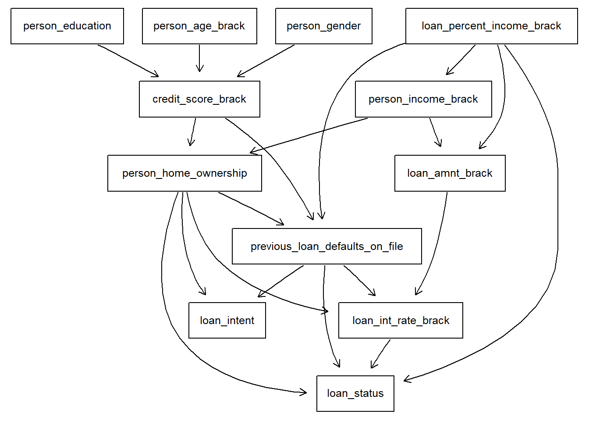
First, I’ll check the network scores between the two models. Overall, it does not seem like much has changed but the updated model has a negligible improvement so I decided to use that model.
map(
list(
hc_dag,
hc_up_dag
),
~bn_score(.x, loan_train, type = "loglik")
)[[1]]
[1] -386319.3
[[2]]
[1] -386286.4map(
list(
hc_dag,
hc_up_dag
),
~bn_score(.x, loan_train, type = "aic")
)[[1]]
[1] -386717.3
[[2]]
[1] -386784.4map(
list(
hc_dag,
hc_up_dag
),
~bn_score(.x, loan_train, type = "bic")
)[[1]]
[1] -388393.7
[[2]]
[1] -388882map(
list(
hc_dag,
hc_up_dag
),
~bn_score(.x, loan_train, type = "bde", iss = 5000, prior = "vsp")
)[[1]]
[1] -406968.7
[[2]]
[1] -406442.9Looking at the confusion matrix, nothing has changed so I’ll now just move on to using the testing dataset.
set.seed(12345)
hc_up_fit <- bn.fit(hc_up_dag, data = loan_train, method = "bayes", iss = 5)
set.seed(12345)
hc_up_predict <- predict(
hc_up_fit,
node = "loan_status",
data = loan_train,
method = "bayes-lw" # "parents"
)
round(
prop.table(
table(
loan_train$loan_status,
hc_up_predict
)
),
2
) hc_up_predict
0 1
0 0.75 0.03
1 0.08 0.14When using the test data, the confusion matrix mimics the output from the training data.
# Use predict to infer the target variable on the test set
set.seed(12345)
hc_predict <- predict(
hc_up_fit,
node = "loan_status",
data = loan_test,
method = "bayes-lw" # "parents"
)
round(
prop.table(
table(
loan_test$loan_status,
hc_predict
)
),
2
) hc_predict
0 1
0 0.74 0.03
1 0.09 0.14I also decided to calculate the accuracy in addition to the classification error.
incorrect_pred <- sum(hc_predict != loan_test$loan_status) # Count mismatched predictions
correct_pred <- sum(hc_predict == loan_test$loan_status)
total_pred <- length(hc_predict) # Total number of predictions
# Classification Error
ce <- incorrect_pred/total_pred
# Accuracy
acc <- correct_pred/total_predThe accuracy is the opposite of the classification error, but I included the code for both. The accuracy for the model was 0.88 and the classification error was 0.12.
I also included the conditional probabilities for loan_status. The interesting finding from the updated model is that when a person has defaulted on a previous loan, none of the other nodes matter and the probability of getting approved for a loan is zero.
hc_up_fit$loan_status$prob[2, 1:4, 1:3, 1:3, 1:2], , person_home_ownership = MORTGAGE, previous_loan_defaults_on_file = No
loan_int_rate_brack
loan_percent_income_brack <10 10 - 15 15+
0-.09 0.09204538045 0.23441689989 0.68234908528
.1 - .19 0.11181890282 0.27953722168 0.69203251344
.2 - .29 0.14229782194 0.35013823128 0.82235274788
.3+ 0.25833519803 0.50364778600 0.79207013871
, , person_home_ownership = OWN, previous_loan_defaults_on_file = No
loan_int_rate_brack
loan_percent_income_brack <10 10 - 15 15+
0-.09 0.00036142836 0.00025706941 0.37554019015
.1 - .19 0.13415540959 0.17275431782 0.31612550164
.2 - .29 0.29006635834 0.28331900258 0.40937696665
.3+ 0.43912749408 0.31612550164 0.62445980985
, , person_home_ownership = RENT, previous_loan_defaults_on_file = No
loan_int_rate_brack
loan_percent_income_brack <10 10 - 15 15+
0-.09 0.14568259065 0.34125578284 0.85128541940
.1 - .19 0.20362270164 0.39789409908 0.85317350774
.2 - .29 0.70486047665 0.77799227799 0.93997469113
.3+ 0.99989151660 0.99995745188 0.99980609633
, , person_home_ownership = MORTGAGE, previous_loan_defaults_on_file = Yes
loan_int_rate_brack
loan_percent_income_brack <10 10 - 15 15+
0-.09 0.00001960523 0.00002052057 0.00025148375
.1 - .19 0.00002556734 0.00002182320 0.00023934897
.2 - .29 0.00010091632 0.00006323831 0.00044476072
.3+ 0.00037713079 0.00020416497 0.00246791708
, , person_home_ownership = OWN, previous_loan_defaults_on_file = Yes
loan_int_rate_brack
loan_percent_income_brack <10 10 - 15 15+
0-.09 0.00018761726 0.00015706477 0.00099009901
.1 - .19 0.00018561140 0.00012266326 0.00072233459
.2 - .29 0.00032129546 0.00022984279 0.00133191263
.3+ 0.00070761393 0.00057803468 0.00491159136
, , person_home_ownership = RENT, previous_loan_defaults_on_file = Yes
loan_int_rate_brack
loan_percent_income_brack <10 10 - 15 15+
0-.09 0.00003029679 0.00001976144 0.00025706941
.1 - .19 0.00002644355 0.00001597107 0.00019282684
.2 - .29 0.00010616162 0.00005181884 0.00075369310
.3+ 0.50000000000 0.50000000000 0.50000000000A major feature that I like about using bnlearn is the cpquery() function. This function takes the bayes net model that was created to estimate an event that occurred from any amount of evidence we provide.
dr_loan <- cpquery(
hc_up_fit,
event = (
loan_status == "1"
),
evidence = (
person_education == "Doctorate"
)
)
complex_loan <- cpquery(
hc_up_fit,
event = (
loan_status == "1"
),
evidence = (
(person_home_ownership == "RENT") &
(loan_intent == "DEBTCONSOLIDATION") &
(loan_int_rate_brack == "10 - 15") |
(loan_int_rate_brack == "15+") &
(previous_loan_defaults_on_file == "No") &
(person_education %in% c("Bachelor", "Master", "Doctor"))
)
)For example, we can see that the probability of a person getting a loan approved when their education is a doctorate is about 25.84%.
We can look at more complex queries. For instance, we can see what the likelihood of getting approved for a loan when someone is renting, looking for a loan for debt consolidation, okay with an interest rate of either 10-15% or 15+%, has never defaulted on a previous loan, and either has a bachelors, masters, or doctorate degree. With all of the evidence provided, the probability of getting approved for the loan is 51.6%.